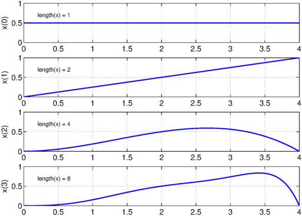
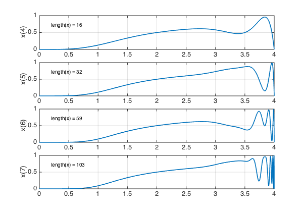
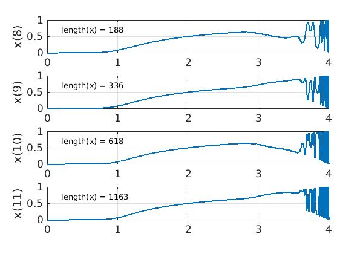
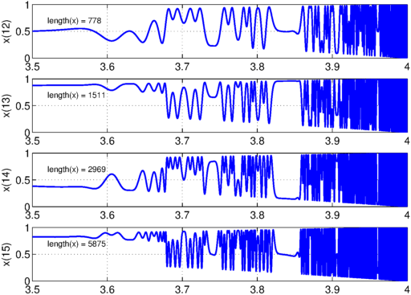
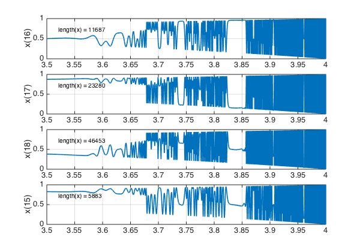
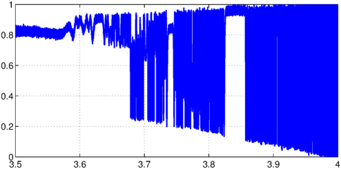
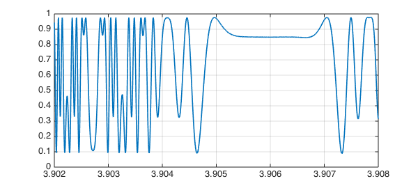

This example comes from a presentation by Qiqi Wang at Oxford in June 2013.
The logistic map is the iteration
$$ x_{n+1} = r x_n (1-x_n), $$
where $r$ is a parameter in the interval $[0,4]$. The map behaves chaotically for certain larger values of $r$, and as $r$ increases, one has the classical example of period doubling as a route to chaos. A picture appears on the back cover of Strang's Introduction to Applied Mathematics [1].
Let's start our iteration with the constant value $x=0.5$, and see how it evolves for a range of values of $r$. Here are steps 0-3:
set(gcf, 'position', [0 0 600 420])
r = chebfun('r',[0 4]);
x = 0.5 + 0*r;
for n = 0:3
subplot(4,1,n+1)
plot(x), grid on, ylim([0 1])
ylabel(['x(' int2str(n) ')'])
text(.2,.7,['length(x) = ' int2str(length(x))])
x = r.*x.*(1-x);
end

Here are steps 4-7:
for n = 4:7
subplot(4,1,n-3)
plot(x), grid on, ylim([0 1])
ylabel(['x(' int2str(n) ')'])
text(.2,.7,['length(x) = ' int2str(length(x))])
x = r.*x.*(1-x);
end

Here are steps 8-11:
for n = 8:11
subplot(4,1,n-7)
plot(x), grid on, ylim([0 1])
ylabel(['x(' int2str(n) ')'])
text(.2,.7,['length(x) = ' int2str(length(x))])
x = r.*x.*(1-x);
end

Let's zoom in on the region $[3.5,4]$ and look at steps 12-15:
r = r{3.5,4}; x = x{3.5,4};
for n = 12:15
subplot(4,1,n-11)
plot(x), grid on, ylim([0 1])
ylabel(['x(' int2str(n) ')'])
text(3.52,.7,['length(x) = ' int2str(length(x))])
x = r.*x.*(1-x);
end

And here are steps 16-18:
for n = 16:18
subplot(4,1,n-15)
plot(x), grid on, ylim([0 1])
ylabel(['x(' int2str(n) ')'])
text(3.52,.7,['length(x) = ' int2str(length(x))])
x = r.*x.*(1-x);
end

The reader can have some fun examining these pictures. Where do we see period 1, period 2, period 4, chaos? How does this match what is known about dependence on $r$?
Let's see the final plot more fully:
figure plot(x), ylim([0 1]), grid on

And let's zoom in on a small interval:
plot(x,'interval',[3.902,3.908]), ylim([0 1]), grid on

References
- G. Strang, Introduction to Applied Mathematics, Wellesley-Cambridge Press, 1986.